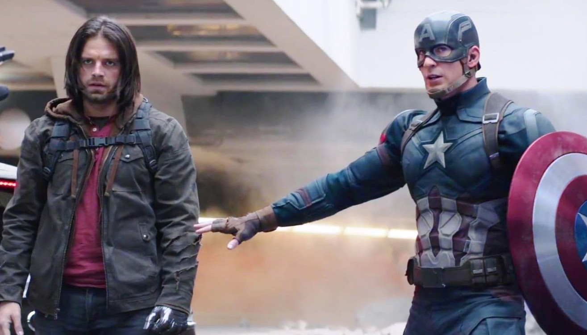

Bucky Barnes Actor Teases High-Stakes Casualties in Avengers: Doomsday
At a Glance
- The Tease: Sebastian Stan hints at high-stakes emotional stakes and potential character losses in Avengers: Doomsday.
- Behind the Scenes: Stan reveals he filmed "scattered scenes" without reading a complete script, highlighting Marvel’s strict secrecy protocols.
- A Nostalgic Reunion: The MCU veteran reflects on over 15 years with the franchise and reuniting with long-time castmates on set.
For over fifteen years, Sebastian Stan has been a cornerstone of the Marvel Cinematic Universe (MCU). From his debut as the loyal sidekick in 2011's Captain America: The First Avenger to his dark evolution into the Winter Soldier, Stan’s Bucky Barnes has survived hydra brainwashing, alien invasions, and the infamous Thanos snap.
Now, as the franchise marches toward its next monumental crossover event Avengers: Doomsday, Stan is issuing a sober warning to fans expecting a straightforward heroic triumph: brace yourselves.
In recent press remarks, Stan offered a candid, chilling preview of what to expect when Earth's mightiest heroes face off against Doctor Doom, played by Robert Downey Jr.
"I’m sure it’s going to be probably heartbreaking, in a lot of ways," Stan revealed. "We’ll see who makes it to the next level."
Filming in the Dark: Marvel's Vault of Secrecy Despite being one of the franchise's longest-tenured veterans, Stan admitted that even the cast remains largely in the dark regarding the final narrative picture.
"I haven't seen the movie, and I don't know how it turned out," Stan acknowledged.
This aligns with comments Stan previously made to Le Journal du Dimanche, where he explained that he filmed "scattered scenes" in isolated setups without ever receiving a complete, unredacted script. Marvel Studios' legendary anti-spoiler protocols mean that actors frequently shoot moments in green-screen bubbles, leaving them as unaware of the ultimate edit as the general public.
However, despite his lack of plot specifics, Stan’s emotional barometer carries significant weight. Having navigated the MCU’s biggest shifts across three phases, his instinct for the tone of Doomsday speaks volumes.
Nostalgia On Set: Growing Up in the MCU It hasn't all been grim warnings, however. Beyond the ominous teases of high stakes, Stan reflected warmly on the experience of stepping back onto the set with his long-time castmates.
When asked about reuniting on set with classic co-stars like Chris Evans, Stan described the atmosphere as deeply personal and reflective:
"I got a chance to reunite with everyone. It was very nostalgic to look back, and think about all of these years that we've known each other, and grew up together. It's incredible in that way. It's been a family and it never stops being that way."
Decoding the Warning: What Does "Heartbreaking" Mean for the MCU? Stan’s choice of words specifically teasing that the story will be "heartbreaking" and that audiences will have to "see who makes it to the next level" has ignited widespread fan speculation about what lies ahead.

- Heavy Casualties: In comic book lore, a title like Doomsday signifies widespread destruction. Stan’s remarks strongly hint that Robert Downey Jr.’s Doctor Doom will leave a tragic trail in his wake, potentially marking the final chapter for several veteran heroes.
- The Bridge to Secret Wars: The phrase "makes it to the next level" strongly suggests a survival-of-the-fittest dynamic that will directly funnel survivors into the subsequent ensemble event, Avengers: Secret Wars.
- Bucky’s Fate: Bucky Barnes has endured one of the longest and most tragic redemption arcs in modern superhero cinema. Fans are left questioning whether Bucky will survive Doom’s reign or if his decade-and-a-half journey is nearing its emotional end.
While Marvel actors are expert practitioners in dodging non-disclosure agreements, Stan’s underlying message is unmistakable: Avengers: Doomsday isn't just another superhero team-up. It is shaping up to deliver the kind of emotional devastation not felt since Avengers: Infinity War.